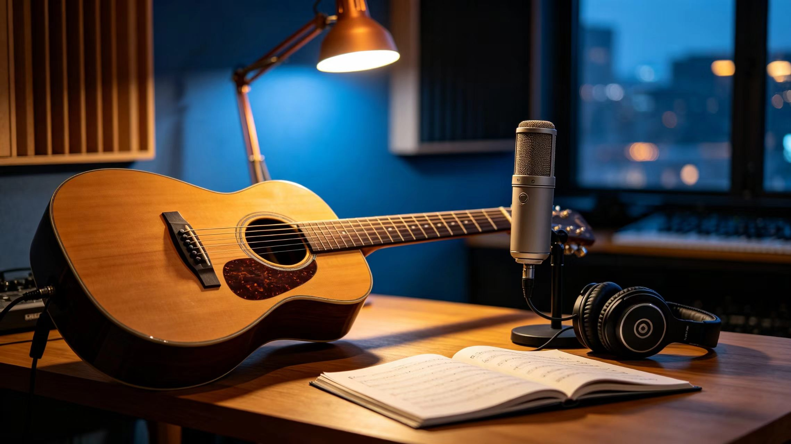

我的爱好
工作学习之外的热爱，让生活更有趣
摄影
喜欢用镜头记录生活中的光影瞬间，风景与街拍是我的主要题材。

音乐
闲暇时听歌放松，也尝试过简单的编曲，享受旋律带来的平静。
阅读
喜欢读设计与技术类的书籍，保持好奇心，不断拓宽自己的视野。
我的座右铭
"保持热爱，奔赴山海。"
工作学习之外的热爱，让生活更有趣
喜欢用镜头记录生活中的光影瞬间，风景与街拍是我的主要题材。

闲暇时听歌放松，也尝试过简单的编曲，享受旋律带来的平静。
喜欢读设计与技术类的书籍，保持好奇心，不断拓宽自己的视野。
"保持热爱，奔赴山海。"